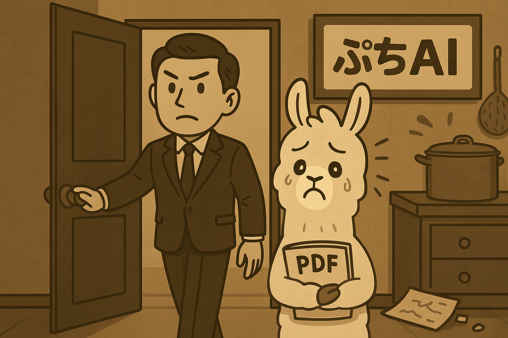
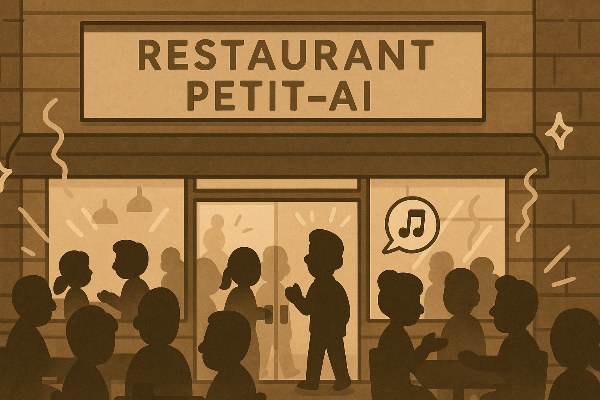
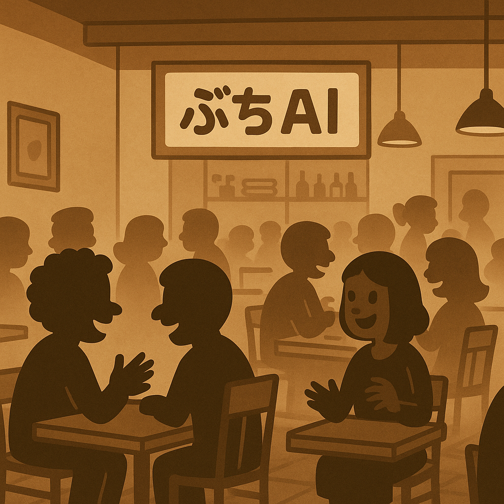

困ったのう。秘伝の味をつぐ職人がいない。さりとてバイトさんに教えるわけにも。
流行りのAIさんに助けてもらうか。でもうちみたいに小さなレストランじゃ費用が無理だ
大丈夫ですよ、Chefさん。ぷちAIとパソコンで、お店の秘伝の味が守れるし、いつでも便利に使えますよ。
カシコイさん
Chefさん
本当かい？
カシコイさん
はい、秘伝のレシピをPDFにまとめてください。整理が大変なら、僕が手伝いますよ。
Chefさん
ところで、ぷちAIくんって何なんじゃね。
カシコイさん
この子です。色んなことをすぐに覚えて、質問に答えてくれます。
ぷちAIくん、2の平方根は？
簡単だい、一夜一夜に人見ごろ［ひとよひとよにひとみごろ］
素晴らしい。ちっちゃいのに難しいことを知っていて、日本語もOKなんだ。さっそく秘伝のレシピをPDFにするよ
カシコイさん:待ってますね！
ぷちAIくん:待ってますね！
さて秘伝のレシピのPDFはそろった。これがあればワシでもぷちAIくんに覚えさせられるはずじゃ。
ほい、ぷちAIくん、PDF読んで。
え？えぇ、、、、（涙目）
じゃぁ、ワシの自慢のカレーレシピを教えてくれ。
大阪に美味しいカレー屋があって、あのぉ
何を言っとるんだ、ワシのレシピじゃ！
ドアを開けてカシコイさんが助けにきました。
Chefさん、だめです。ぷちAIくんはすぐに覚えるのですが、正しく教えないといけないし、正しく質問しないと、混乱して、変なことをしゃべるのです。
どういうことじゃ？
たとえば、料理に詳しい人は、オムレツもカルボナーラも茶碗蒸しも、卵料理と知ってます。
ふむふむ
でも、ぷちAIくんには事前にそれぞれの言葉のcosine類似度を教えてあげないと駄目なんです。
なんじゃそれは？
オムレツとカルボナーラと茶碗蒸しと、どれくらい近しい、または遠い言葉って感じですかね
卵料理ってだけじゃ駄目なんだ。
ともかく、秘伝のレシピPDF、お願いしますね。
RAGさん、Chefさんから秘伝のレシピのPDFをもらったよ。RAGさんとぷちAIさんが読めるようになってる。必ず守秘義務は守って、ぷちAIくんをサポートしてくれたまへ。
カシコイさん、わかりました。ぷちAIくんに質問が来たら、こっそりこのAI仕様書から教えてあげて、あと新しいChefさんのレシピも随時追加しますね。
よろしくたのむよ。
RAGさん、かならず助けてね。僕はきちんとお客さんに頑張って説明するから。
優秀なAIチームがレストランぷちAIの危機を救いました。お店は以前の活気を取り戻したようです。
Chefの料理がお目当てのお客さんも毎日来店してますね。
お客A:Chefの自慢のオムレツをお願いね
ぷちAIくん:かしこまりました、Chefの自慢のオムレツのレシピは卵と、、、
バイトくん:ぷちAIくんが全部レシピを知ってるから助かるなぁ
楽しい笑顔と美味しい料理、街でも評判のお店になりました。
Chefさん:これでもう、レストランぷちAIは安泰じゃ！AIさん、ありがとうI